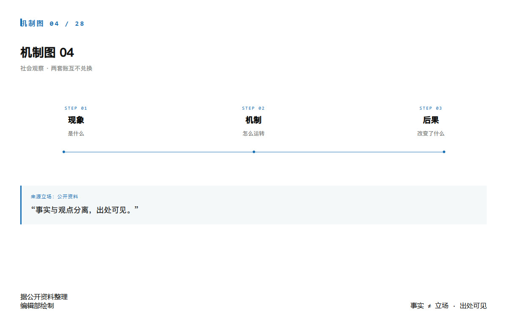

判决书换不回搜索第一页
社会观察 · 两套账互不兑换
判决下来了，你赢了。你把文书拍下来，存进手机。然后习惯性地搜了一下自己的名字——第一页还是几年前那篇旧文，标题刺眼，读它的人比读你判决书的多几个数量级。
下面说的是两套系统各自的运行方式，判断来自公开的报道与可查的程序事实。具体指控不转述、不评价，个案是非以司法结论为准。这里只谈一个结构：它们互不兑换。
你以为清白能自证。可清白记在制度那本账上，名声记在流量那本账上。两本账不通兑，你在一本里赢了，另一本里可能一分没涨。
叙事结论吃的是互动定价：先发、高互动、强情绪，前面拆过的那套。程序结论吃的是另一套——文书效力、征信、档案。它的权威在制度里，不在流量里。
两套系统的记账单位都不一样。一本记转发、点赞、搜索排位；一本记案号、生效日期、执行记录。它们对「事实」的定义也不同：一本是被最多人相信的版本，一本是经质证认定的版本。
互不兑换，是这里最冷的一点。你不能用搜索排位去改判决，也不能用判决去改搜索排位。两边的数字再大，也流不到对方账上。
澄清的内容在互动定价里天然吃亏。指控帖先发、情绪强、姿态干净，分数高；澄清帖后发、要讲逻辑、要摆证据，分数低。一份道歉声明的互动量，常常只有当初那条帖子的零头。
搜索第一页按相关性和热度排，不按判决日期排。你赢了官司，可那篇旧文还挂在最上面，标题也没改。读者点进去，看完就走，不会往下拉到你的那份文书。
这不是搜索在偏袒谁。它只是在按自己的规则办事：什么被人点得多，什么就排前面。判决是权威的，但权威不是它的排序因子。两本账，各算各的。
📌 一句最冷的判断
一张胜诉判决书，换不回搜索结果第一页。一本记文书效力，一本记互动分数，两套系统互不兑换。
程序里有一条常识：谁主张，谁举证。这条规则的前提是，举证责任跟着主张走。可在叙事轴上，被卷入的那一方事实上承担了无限自证的义务——你得证明「没发生过」。
而未发生的事，本来就无法证明。你拿不出覆盖每一秒的清白记录。你说没有，对方一句「你急了，就是心虚」，就把举证责任重新推回给你。
这不是法律写错了。法律那条规则还在，是舆论场把它单方面改写了。改写的开关藏在常用句子里：「抛开事实不谈」「你急什么」「身正不怕影子斜」。这些话你大概都听过。
对制度接口的结构性概括
「执法的归执法，叙事的归叙事，但代价只由当事人承担。」
结构性概括，非法律意见。个案是非以司法结论为准，指控内容不转述、不评价。

▲ 两本账：一本记文书，一本记分数（编辑部绘制）
能谈的方向不是要求平台「主持公道」，那太笼统。具体一点：判决书能不能成为搜索结果里的一个字段——不是等权重置顶，只是一个可核对的入口，让读者知道这事已有司法结论。
一个入口，改变不了两本账不通兑的事实，但能让翻到这一页的人多一份信息。讨论到这里就够了：不指望它翻盘，只要求它别消失。
✍️ 你有没有搜过一个人的名字，发现第一页还是几年前的事？
那时候你信了第一页，还是往下翻了？评论区说说。觉得有用，点个赞、点个「在看」。
下一篇：「抛开事实不谈」——讨论的地面是怎么被抽走的。
参考
「两套定价系统互不兑换」「无限自证义务」为机制分析概念，属分析性判断，非法律意见。
程序「谁主张谁举证」为法治常识；「无限自证」指舆论场的举证负担体验，非法律规则变更。个案是非以司法结论为准。
社会观察，不站任何性别立场。涉及敏感指控不转述、不评价，只观察两套系统的运行结构；个案是非以司法结论为准。拆解机制是为了理解，不是行动指南。